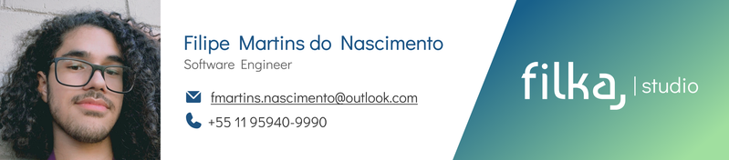

A Filka é independente e focado em integrar dois universos da tecnologia para entregar produtos digitais com cuidado de boutique e velocidade de equipe interna.
Acreditamos que a melhor tecnologia desaparece — dentro de uma interface clara, de um dado bem modelado, de uma marca que respira.
No Filka, programação e design não são disciplinas separadas: são uma só prática, exercida com obsessão por detalhe, respeito pelo prazo e pelo dinheiro do cliente.
Entregar alta qualidade e agilidade no mesmo projeto não é uma promessa de marketing. É o que estamos aqui para fazer.
Preferimos poucos clientes com profundidade a muitos clientes na superfície. Cada projeto recebe atenção real do início ao fim.
Testes, observabilidade e arquitetura pensada para o tempo de vida do produto — não para a apresentação de quinta.
Design não é decoração. É a forma como o produto se explica antes de qualquer manual.
Você vê o produto crescer toda semana — não num big-bang no go-live.
Bonito sem ser útil é portfólio. Útil sem ser bonito é planilha. A gente busca os dois.
Não desaparecemos no go-live. Operação contínua, melhorias e suporte fazem parte do que entregamos.
Engenheiro de software com prática consolidada em analytics engineering, pipelines em Databricks, modelagem dimensional e aplicações com LLMs.
Conduz a maior parte dos projetos do Filka — da arquitetura técnica à direção de design — com a convicção de que código e composição visual deveriam ser ensinados na mesma aula.

Time enxuto, três cases ativos em três disciplinas distintas. Pipeline para H2 fechado em maio.
Primeiros agentes e RAGs em produção para consultoria e fintech.
Modelagem dimensional, dbt e Databricks como prática principal da casa.
Filipe une as práticas de programação e design digital em um única operação independente.